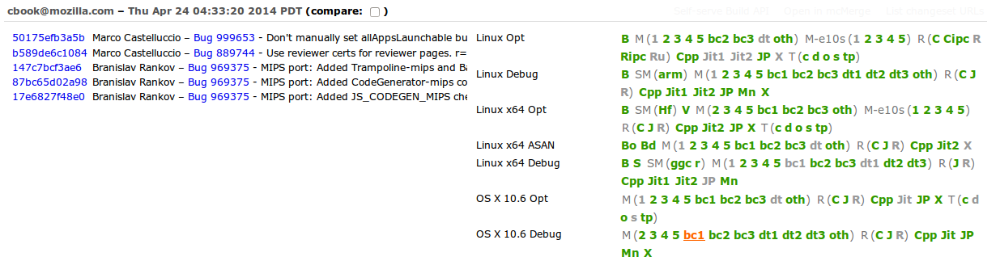
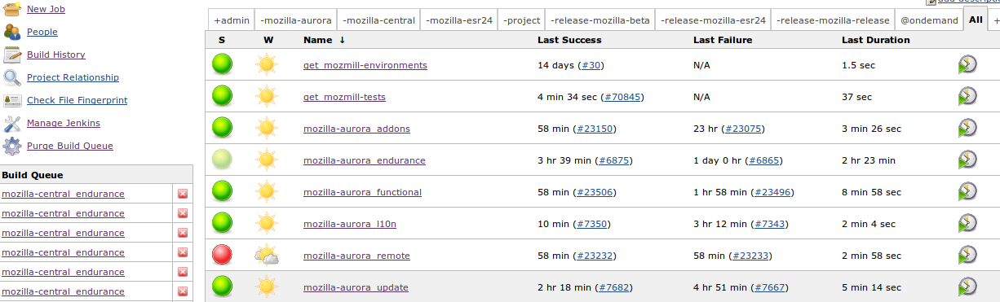

Henrik Skupin <hskupin@mozilla.com>
As listed on http://www.ohloh.net/p/firefox:
The way to keep up is Test Automation!

Exclusive features:

Slides: http://bit.ly/fosdem13mozauto
Dave Hunt <dhunt@mozilla.com> (davehunt on IRC)
Henrik Skupin <hskupin@mozilla.com> (whimboo on IRC)
Automation Development:
https://wiki.mozilla.org/Auto-tools/Automation_Development/
irc://irc.mozilla.org:6667/#automation